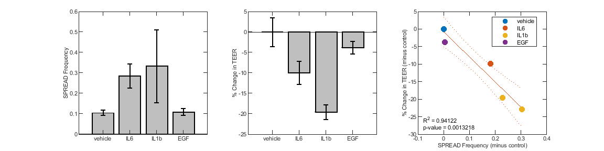

Figure 4 - pHBE in differentiated in ALI
Contents
Figure 4A - pHBE in ALI response to 20ng/mL IL1b
Images and sup video 7 are from 2022-11-03 pHBE ALI experiment plate 2 (data is used below as well)
% scale bar is 250uM % from: 2022-11-03 pHBE ALI pt5 virus EKAREN4 Cytokines % xy 25 (20ng/mL il1b treated at ~1.1hr from start) 6 min loop time % Movie tps from start kept (in min): % 42, 54, 66, 78, 90, 102
Figure 4B - pHBE ALI SPREADs occuring after 20ng/mL IL1b treatment
Images and sup video 7 are from 2022-11-03 pHBE ALI experiment plate 2 (data is used below as well)
% scale bar is 250uM % from: 2022-11-03 pHBE ALI pt5 virus EKAREN4 Cytokines % xy 25 (20ng/mL il1b treated at ~1.1hr from start) 6 min loop time % Movie tps from start kept (in min): % 456, 468, 480, 948, 966, 984
Figure 4 C-E SPREAD vs TEER Correlation plot
% add paths addpath('Z:\Code\Image Analysis\','Z:\Code\Cell Trace\','Z:\Code\Nick\') % Make the plot for the experiment with live cell and TEER data % Run 1's data 2022-11-03 data % Load the live cell data dataloc = load('Z:\Processed Data\SPREADs\2022-11-03 pHBE EKAREN4 ALI Cytokine P2\2022-11-03 pHBE EKAREN4 ALI Cytokine P2_Processed_Copy.mat'); dataloc = dataloc.dataloc; % Extract the SPREADs data spreadData = convertSPREADToDataframe2(dataloc, 'EKAR', 'tmaxaftertx',30); % shorten the tx names for simplicity spreadData.txinfo = strrep(spreadData.txinfo,'20ng/mL ',''); spreadData.txinfo = strrep(spreadData.txinfo,'10ng/mL ',''); spreadData.txinfo = strrep(spreadData.txinfo,'1 ',''); % get the statistics spreadStats = grpstats(spreadData,"txinfo",["mean","median","sem"],"DataVars","freq"); % subtract each run's own mean from its own run spreadData.freqSubV = spreadData.freq - spreadStats{"vehicle","mean_freq"}; % Add the TEER data (Mean data from the same experimental dataset, 2022-11-03 % for both the imaged plate and the second plate that had the technical replicates) % This data can be found in the Notes section of the _platemap data for the experiment % Which can be found here: SPREADs\Plotting_Code\TEER_Data_For_plots.xlsx teerData = table(); teerData.PercChangeInTeer = [0; -9.92; -19.59; -3.761]; teerData.TeerSEM = [3.5846; 2.8435; 1.8805; 1.5199]; teerData.Properties.RowNames = {'vehicle','IL6', 'IL1b','EGF'}; % Merge the tables to make plotting easier spreadTEERdata = join(spreadStats,teerData,'Keys','Row'); % subtract the vehicle spread freq for combining replicates spreadTEERdata.freq_minus_cont = spreadTEERdata{:,"mean_freq"} - spreadTEERdata{"vehicle","mean_freq"}
spreadTEERdata =
4×8 table
txinfo GroupCount mean_freq median_freq sem_freq PercChangeInTeer TeerSEM freq_minus_cont
_________ __________ _________ ___________ ________ ________________ _______ _______________
vehicle "vehicle" 9 0.10487 0.086677 0.013662 0 3.5846 0
IL6 "IL6" 9 0.28678 0.20225 0.059277 -9.92 2.8435 0.18191
IL1b "IL1b" 9 0.33387 0.17335 0.17861 -19.59 1.8805 0.229
EGF "EGF" 9 0.11022 0.10594 0.017954 -3.761 1.5199 0.0053504
Also check other runs
Run 2's data - 2023-01-10 Plate 1
data2 = "Z:\Processed Data\SPREADs\2023-01-10 pHBE ALI EKAR Cyto Plate 1\2023-01-10 pHBE ALI EKAR Cyto Plate 1_Processed_Copy.mat"; dataloc2 = load(data2); dataloc2 = dataloc2.dataloc; % Extract the SPREAD data spreadData2 = convertSPREADToDataframe2(dataloc2, 'EKAR', 'tmaxaftertx',30,'aftertreatment',2,'exclude',{'gef','IL6','IFN'}); % get the statistics spreadStats2 = grpstats(spreadData2,"txinfo",["mean","median","sem"],"DataVars","freq"); % subtract each run's own mean from its own run spreadData2.freqSubV = spreadData2.freq - spreadStats2{"1 vehicle 1 vehicle","mean_freq"}; % Add the TEER data (Mean data from the same experimental dataset, 2023-01-10) % This data can be found in the Notes section of the _platemap data for the experiment teerData2 = table(); teerData2.PercChangeInTeer = [0; -22.91]; teerData2.TeerSEM = [NaN; NaN]; teerData2.Properties.RowNames = {'1 vehicle 1 vehicle','20ng/mL IL1b 1 vehicle'}; % Merge the tables to make plotting easier spreadTEERdata2 = join(spreadStats2,teerData2,'Keys','Row'); % shorten the tx names for simplicity spreadTEERdata2.txinfo = strrep(spreadTEERdata2.txinfo,'20ng/mL IL1b 1 vehicle','IL1b'); spreadTEERdata2.txinfo = strrep(spreadTEERdata2.txinfo,'1 vehicle 1 vehicle','vehicle'); spreadTEERdata2.freq_minus_cont = spreadTEERdata2{:,"mean_freq"} - spreadTEERdata2{"1 vehicle 1 vehicle","mean_freq"} % merge the data mergedSpreadTEERdata = [spreadTEERdata; spreadTEERdata2]; % Fit a linear model to the merged data mdl2 = fitlm(mergedSpreadTEERdata,'PredictorVars','freq_minus_cont','ResponseVar','PercChangeInTeer')
spreadTEERdata2 =
2×8 table
txinfo GroupCount mean_freq median_freq sem_freq PercChangeInTeer TeerSEM freq_minus_cont
_________ __________ _________ ___________ ________ ________________ _______ _______________
1 vehicle 1 vehicle "vehicle" 6 1.0543 1.0902 0.29705 0 NaN 0
20ng/mL IL1b 1 vehicle "IL1b" 6 1.3569 1.4364 0.18427 -22.91 NaN 0.30257
mdl2 =
Linear regression model:
PercChangeInTeer ~ 1 + freq_minus_cont
Estimated Coefficients:
Estimate SE tStat pValue
________ ______ ________ _________
(Intercept) -0.7894 1.5363 -0.51382 0.63446
freq_minus_cont -71.567 8.9421 -8.0034 0.0013218
Number of observations: 6, Error degrees of freedom: 4
Root Mean Squared Error: 2.7
R-squared: 0.941, Adjusted R-Squared: 0.927
F-statistic vs. constant model: 64.1, p-value = 0.00132
Now plot Figure 4C-E to be appended to the image montages
figgy = figure; % Plot the spread frequency by treatment subplot(1,3,1) bar(spreadTEERdata.txinfo,spreadTEERdata.mean_freq,'FaceColor',[0.75,0.75,0.75],'EdgeColor','k', 'LineWidth',1.5) hold on; errorbar(spreadTEERdata.mean_freq,spreadTEERdata.sem_freq,"vertical",'.','Color','k','LineWidth', 1.5,'MarkerSize', 1) ylabel('SPREAD Frequency'); % add y label set(gca,'TickLength',[0.03, 0.03],'LineWidth',1); % plot the change in TEER by treatment subplot(1,3,2) bar(spreadTEERdata.txinfo,spreadTEERdata.PercChangeInTeer,'FaceColor',[0.75,0.75,0.75],'EdgeColor','k', 'LineWidth',1.5) hold on; errorbar(spreadTEERdata.PercChangeInTeer,spreadTEERdata.TeerSEM,"vertical",'.','Color','k','LineWidth', 1.5,'MarkerSize', 1) ylabel('% Change in TEER'); % add y label set(gca,'TickLength',[0.03, 0.03],'LineWidth',1); % plot the SPREAD freq vs % change in teer w/ treatments colored subplot(1,3,3) plot(mdl2,'LineWidth',1) % plot the model set(gca,'TickLength',[0.03, 0.03],'LineWidth',1); hold on; plt = gscatter(mergedSpreadTEERdata.freq_minus_cont,mergedSpreadTEERdata.PercChangeInTeer,mergedSpreadTEERdata.txinfo); % add the data labels xlabel('SPREAD Frequency (minus control)'); % add x labels xlim([-0.1,0.4]); % add x limit ylim([-30, 5]); % add y limit ylabel('% Change in TEER (minus control)'); % add y labels [plt(:).MarkerSize] = deal(30); % make all of the dots larger text(-0.08,-26,0,['R^2 = ',num2str(mdl2.Rsquared.Ordinary)]); text(-0.08,-28,0,['p-value = ',num2str(mdl2.anova.pValue(1))]) title(''); % remove the title % standardize the figure set(gca,'TickLength',[0.03, 0.03],'LineWidth',1); figgy.Units = "inches"; fontname(figgy,"Arial"); fontsize(figgy,8,"points") figgy.Position = [0.5,0.5,12,3]; saveas(gcf,'Z:\imageData\SPREADs\Plotting_Code\Figure_Outputs\F4_pHBE_ALI_SPREADs_vs_TEER.fig') saveas(gcf,'Z:\imageData\SPREADs\Plotting_Code\Figure_Outputs\F4_pHBE_ALI_SPREADs_vs_TEER.svg')